- Availability Zones are composed of one or more discrete data centers with redundant power, networking, and connectivity
- Software as a Service (SaaS) = Manage everything and provides you with a client to interact with the service
- Platform as a Service (PaaS) = Manage Applications and Data
- Pricing Model = Pay as you go
- The 3 pricing fundamentals of AWS are Compute, Storage and Data transfer out of the AWS Cloud
- AWS Compute Services: EC2, Lightsail, Lambda, Batch, Elastic Beanstalk, Serverless Application Repository, AWS Outposts, EC2 Image Builder.
- Types of Cloud Computing Deployments:
- Public Cloud - AWS, Azure, GCP
- Hybrid - Mixture of public and private
- Private Cloud (or On Premise) - you manage it in your datacenter
- Trade Capital Expense (CapEx) for variable expense: pay only when you consume resources instead of invest in data centers. No sunk cost.
- Benefit from massive economies of scale
- Stop guessing about capacity
- Increase speed and agility: develop faster and focus only in your code
- Go global in minutes
- AWS is responsible for the security OF the cloud: management of data centers, security cameras, cabling, patching RDS operating system, etc.
The policies define the permissions of the user, groups or roles
When a policy is attached to an individual user is called an inline policy
MFA
Virtual MFA Device = Google Authenticator o Authy
U2F security key = physical USB device
How to manage AWS
AWS Console = UI accesible via web browser
AWS SDK = package that allow a programming language to communicate with AWS
AWS CLI = You need to install the AWS CLI and it allows you to do everything you can do in the web (AWS console).
AWS CloudShell = Is an AWS CLI that you can launch in the web browser (when you are logged in). You can upload and download files to your AWS PowerShell as if you are working in a machine
IAM Roles
They are used to assign permissions to AWS services in order to perform action on your behalf. A role can be used by either an IAM user in the same AWS account as the role or a user in a different AWS account. A role can also be used by a web service that AWS offers; a prime example is Amazon EC2.
Identities
They are the IAM resource objects that are used to identify and group. You can attach a policy to an IAM identity. These include users, groups, and roles.
Entities
They are the IAM resource objects that AWS uses for authentication. These include IAM users, federated users, and assumed IAM roles.
Principal
It is a person or application that uses the AWS account root user, an IAM user, or an IAM role to sign in and make requests to AWS.
Security Tools
IAM Credentials Report (account-level) = a report (excel) that lists all your account's users and the status of their various credentials
IAM Access Advisor (user-level) = shows the services permissions granted to a user and when those services were last accessed
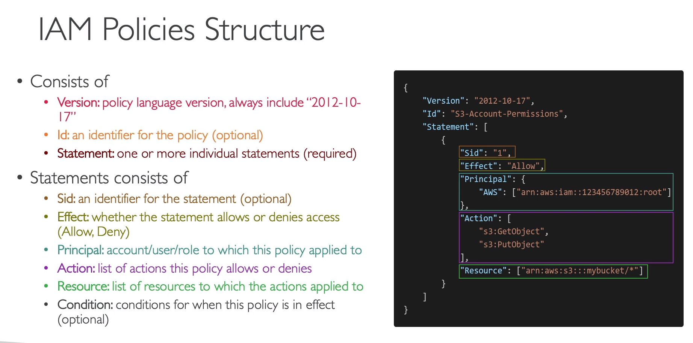
What includes the Credentials Report

- This services is considered Infrastructure as a Service (IaaS).
- You can comunicate with an EC2 instance via SSH with your prefered SSH client or with the option "EC2 Instance Connect" in the console (web browser).
- The minimum charge for an EC2 instance is 60 seconds
- Instance metadata: is data about your instance that you can use to configure or manage the running instance (even programatically).
- EC2 user data: instance bootstraping script
Amazon Machine Image (AMI)
docker like images to be run in EC2 instances. The AMI must be in the same region as that of the EC2 instance to be launched. If the AMI exists in a different region, you can copy that AMI to the region where you want to launch the EC2 instance. The region of AMI has no bearing on the performance of the EC2 instance. You can create a new AMI from an existing EC2 instance.
- EC2 Image Builder. Is a free service that help you to attach packages, roles and config other options to create a custom AMI.
EC2 instance types
- General porpuse: ideal for web servers. Good balance between compute, memory and networking.
- Compute optimized: great for compute-intensive tasks that require high performance processors.
- Memory optimized: fast performance for workloads that process large data sets in memory.
Security groups
- It is (kind of) a firewall that can be attached to any EC2 instance.
- It controls how traffic is allowed into or out of our EC2 instances. Can only contain ALLOW rules.
- You can attach several security groups to an EC2 instance.
- By default a security group deny any inbound traffick and allow any outbound traffic.
EC2 Purchasing options/Launch types
- On-Demand: pay as you go
- Reserved: (up to 70% discount) you commit to use the instance for one or three years with no, partial or all upfront payment:
- Standard: you cannot change the type of instance
- Convertible: you can change the type of instance
- Scheduled: you reserved only a specific period of the day, week or month. This is not a valid response on the exam. AWS currently has this messages in its web: "You cannot purchase Scheduled Reserved Instances at this time".
- Dedicated Instance: hardware dedicated to your use but you don't have control over instance placement.
- Dedicated Host: physical server fully dedicated to your use. You need to commit for a 3 years period. Any question that talks about special licensing requirements refers to this instance type.
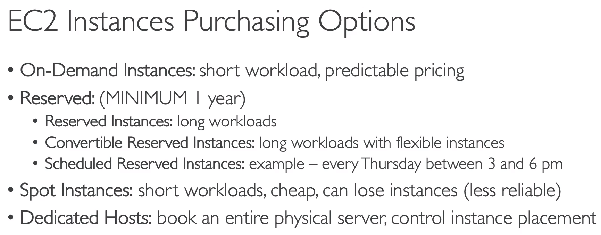
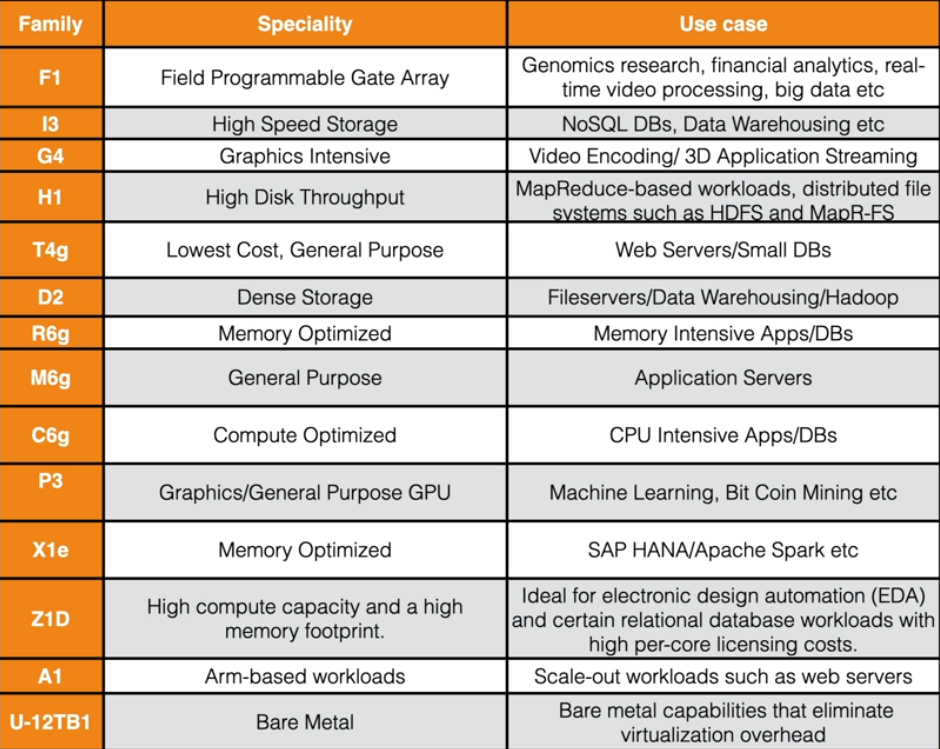
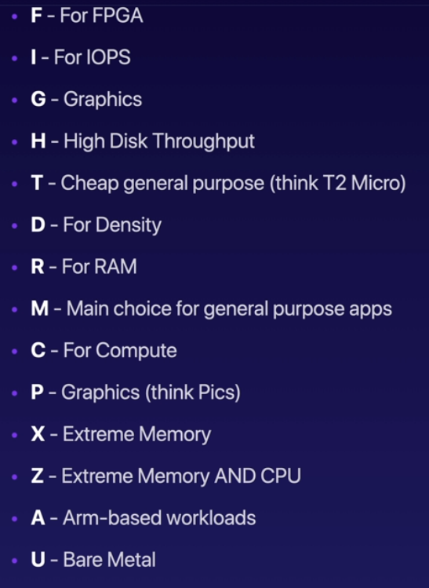
- Private IP: You can use it internally in your network but not in the internet.
- Public IP: You can use it to connect to the internet.
- Elastic IP: AWS offers (for rent) Public IPs that you can attach to an EC2 instance or other service in order to have a pubilc static IP no matter if the instance is restarted.
- Spot Fleet: is a set of Spot Instances and optionally On-demand Instances. It allows you to automatically request Spot Instances with the lowest price.
- EC2 Placement Groups: It allows you to control the EC2 instances placement. When you create a placement group you can specify one of these strategies:
- Cluster: clusters instances into a low latency group in a single AZ. Good for applications that need low latency but has the con of low availability
- Spread: spread instances across underlying hardware - racks (max 7 instances per group per AZ). Good for applications that needs high availability but has the con of a higher latency.
- Partition: spread instances across many different partitions (which rely in different sets of racks) within an AZ. Scales to hundreds of EC2 instances per group. Good for big data applications which are partition aware.
- Elastic Network Interfaces (ENI): Logical component in a VPC that represents a virtual netwrk card. It's bound to a specific AZ. You can created it attached to an EC2 instance (it's deleted when the instance is terminates) or on the fly in order to attach it to an EC2 instances or another one for failover. It can have th following attributes:
- Primary private IPv4 and one or more secondary IPv4
- One elastic IPv4 per private IPv4
- One public IPv4
- One or more security groups
- A MAC address
- EC2 Hibernate: It help you to have shorter instance start times placing the in-memoty (RAM )state in the attached EBS volume (the volumen must be an EBS and it must be encrypted). Is available for on-demand, reserved and spot instances. Not supported for are metal instances
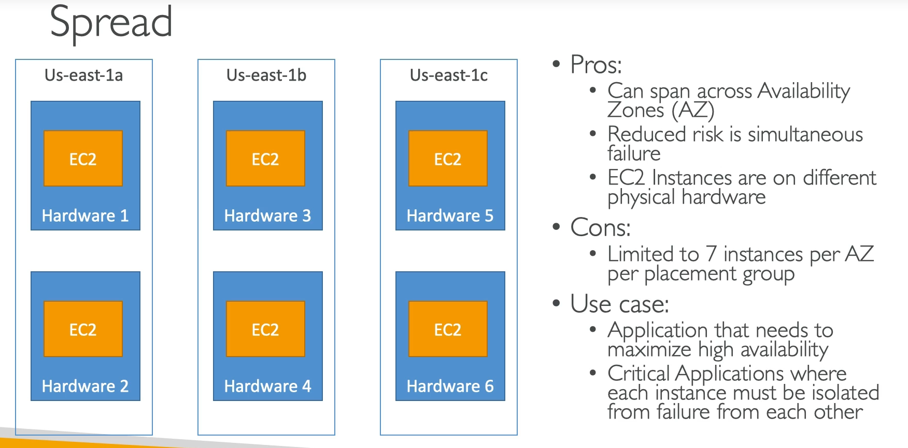
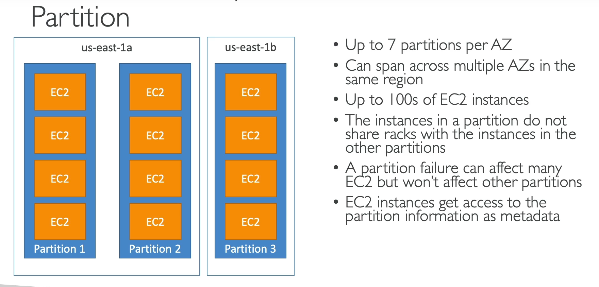
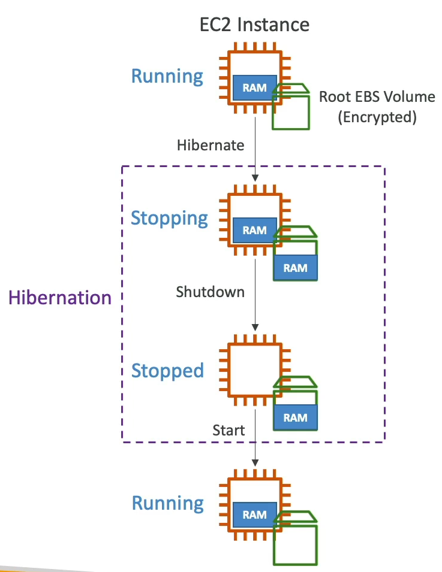
- Is a network drive you can attach to your instances while they run (might be a bit of latency)
- The first EBS volumen attached to an EC2 instance is considered a root volume and its default behaviour is to be deleted on EC2 instance termination. If you have more tha one EBS volume attached t the same instance the default behaviour (delete volume) is only applied to the root volume.
- Is a recommended storage option when you run databases on an instance
- Can be attached to only one EC2 instance at a time but one instance can have several EBS volumes attached
- Only work in one availability zone. You can create a snapshot to migrate a volume from one AZ to another
- About volume type: gp2 and gp3 are general porpuse volumes. io1 and io2 are great for operations that needs high I/O operations per second. HDD is good if you are looking for a cheaper solution and the performance is not your main concern.
- Only EBS volume types gp2, gp3, io1 and io2 can be used as boot volumes
- Multi-attach: an io1 or io2 EBS volume can be attached to multiple instances in the same AZ. Can attach up to 16 instances at a time. Must use a filesystem that is cluster aware
- gp2 and gp3 increase its I/O when storage size is increased. io1 and io2 increase its I/O independently.
- You can create an encrypted EBS volume (all the encryption is handled by AWS leveraging KMS keys) which means encryption of data inside the volume, all data in-flight between volume and instance, snapshot and volumes created from an ecrypted snapshot.
- Amazon EBS Snapshots are a point in time copy of your block data. For the first snapshot of a volume, Amazon EBS saves a full copy of your data to Amazon S3. EBS Snapshots are stored incrementally, which means you are billed only for the changed blocks stored.
EC2 Instance Store
- Is a high performance block storage attached to an EC2 instance. Is ephemeral, is deleted when the EC2 instance is terminated.
EFS - Elastic File System
- Is an elastic file system for Linux-based workloads
- No upfront payments. You pay for the amount of data (per GB) that you use
- Can be mounted in hundreds of EC2 instances even if they belong to multiple AZs.
- Can be directly used with on-premises systems.
- Offers high availability, scalability but at a higher cost (3x expensive than EBS gp2). EC2 instances can access files on an EFS file system across many Availability Zones, Regions and VPCs
- It has an Infrequent Access storage Class that is cost-optimized for files accessed less frequently. Data stored on the Infrequent Access storage class costs less than Standard and you will pay a fee each time you read from or write to a file.
FSx
- FSx for Windows File Server is a fully managed, highly reliable, and scalable Windows native shared file system.
- FSx for Lustre (Linux and Cluster) is a fully managed high peformance, scalable file storage for High Performance Computing (HPC). It can scale to hundreds of GB/s.

EBS drive type 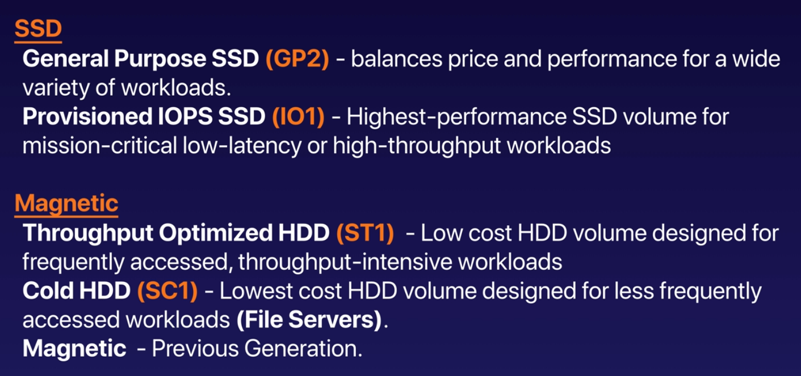
EFS storage classes 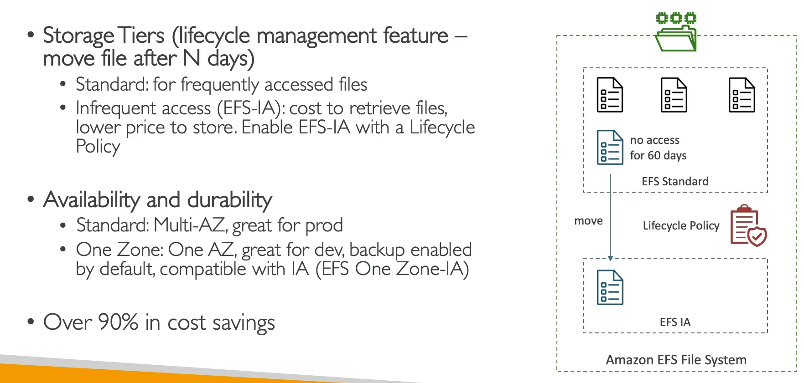
EFS performance classes 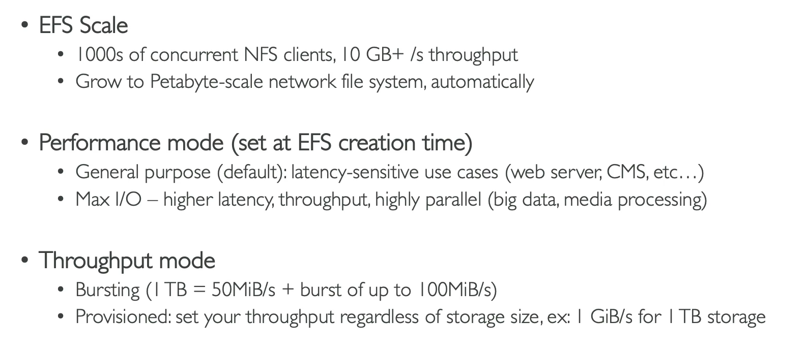
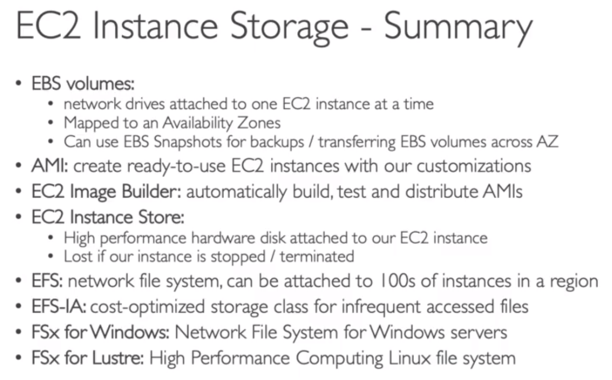
- High availability = run your application or system in at least two data centers
Elastic Load Balancer - ELB
- Provide SSL for several EC2 instances
- Do regular health checks to your instances
- Some load balancer can be setup as internal (private) or external (public)
- The most secure way of ensuring only the ALB can access the EC2 instances is referencing the ALB by security group in rules.
- AWS offers three kind of load balancers:
- Classic load balancer - CLB (slowly retiring) - layer 4 & 7: when created receive a fixed hostname (XXX.region.elb.amazonaws.com). In order to add targets you need to add them directly to the load balancer's configuration (not using target group). Can make health checks via HTTP, HTTPS or TCP protocols. Provides static DNS
- Application load balancer - ALB (HTTP / HTTPS only) - layer 7: you can set a target group that list the EC2 instances, ECS tasks, lambda functions o IP Addresses where is going to route the traffic to. It can route to differente target groups. The health checks are at target group level. You can configure responses from the load balancer, is not required to route to a target group. Provides static DNS. To get the client's IP address, ALB adds an additional header called "X-Forwarded-For", it contains the client's IP address
- Network load balancer - NLB (ultra high performance, allows for TCP and UDP) - layer 4: less latency than Application load balancer and can handle millions of requestsper second. Has one static IP per AZ and supports assigning elactic IP (helpful for whitelisting specific IP). Their target groups support EC2 instances, IP addresses (only private IPs) and Application load balancer. Can make health checks via HTTP, HTTPS or TCP protocols. Only Network Load Balancer provides both static DNS name and static IP.
- Gateway load balancer - GLB - layer 3 (network layer) IP Protocol: deploy, scale and manage a fleet of 3rd party netwotk virtual appliances (for example: firewalls, intrusion detection systems, payload manipulation, etc). It's normally used in combination with oter type of load balancer (see image).Uses the GENEVE prtotocol on port 6081. Their target groups support EC2 instances and IP addresses (only private IPs). Combine the following functions: Transparent network gateway (single exit/entry for all traffic) and Load balancer (distributes trafic to your virtual appliances)
- Make the ALB available in different subnetworks (ACs)
- Attach security groups
- Set the http port that the ALB is listening to
- Set the Target Group (group of EC2 instances) for the ALB to redirect the traffic
- Cross-zone load balacing: allows you to route the traffic to more than one AZ. See image for more details for each loadb balancer type
- SSL - Server Name Indication (SNI): SNI solves the problem of load multiple SSL certificates onto one web server (to serve ultiple websites). It requires the client to indicate the hostname of the target server in the initial SSL handshake in order to provide the right certificate. It only works for ALB and NLB, to apply multiple SSL certificates with CLB you must create multiple CLB
- Connection drainning (for CLB) or Deregistration Delay (for ALB and NLB): use it to ensure that a Load Balancer stops sending requests to instances that are de-registering or unhealthy, while keeping the existing connections open. This enables the load balancer to complete in-flight requests made to instances that are de-registering or unhealthy. When you enable connection draining, you can specify a maximum time for the load balancer to keep connections alive before reporting the instance as de-registered. The maximum timeout value can be set between 1 and 3,600 seconds (the default is 300 seconds). When the maximum time limit is reached, the load balancer forcibly closes connections to the de-registering instance
Auto Scaling Groups - ASG
- Scale out means add instances. Scale in means remove instances
- You can set a minimum, maximum and desired size and the ASG scales accordingly. This configuration is called an scaling policy
- The goal is to setup as many EC2 instances as you set in the desired size without breaking the minimum and maximum sizes (limits)
- It can replace an unhealthy instance and register new instances to a load balancer
- After a scaling activity happens, you are in the cooldown period (default to 300 seconds). During the cooldown period the ASG will not launch or terminate additional instances (to allow for metrics to stabilize)
- Good metrics to scale on: CPU utilization, request count per target, average network in / out, custom metrics that better fit your use case
- Scaling Strategies:
- Manual Scaling: manually set the ideal sizes
-
Dynamic Scaling:
- Simple / Step Scaling: set alarms in CloudWatch and when the alarm is triggered then add or remove instances.
- Target tracking scaling: tracks a metric. For example: I want the average ASG CPU to stay at around 40%.
- Scheduled scaling: anticipate a scaling based on known usage patterns. For example: Increase the min capacity at 5pm on fridays.
- Predictive Scaling: use machine learning to predict future traffic ahead of time and automatically provisions the necessary EC2 instances
Cross-zone load balancing 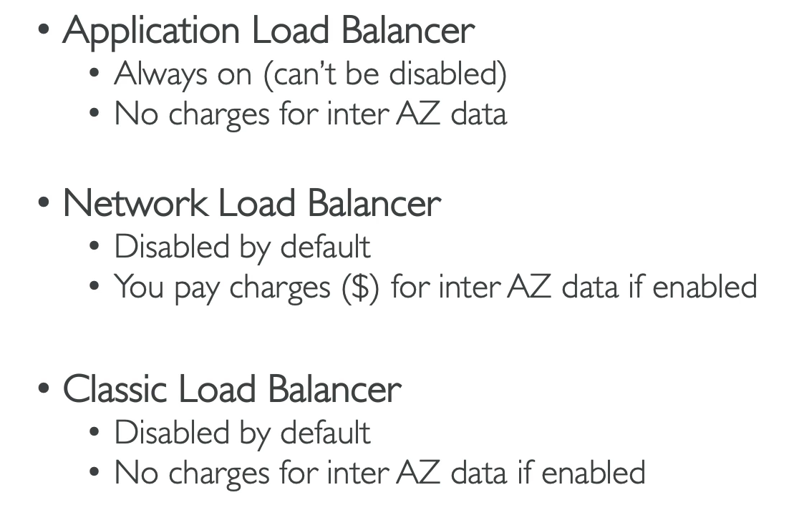

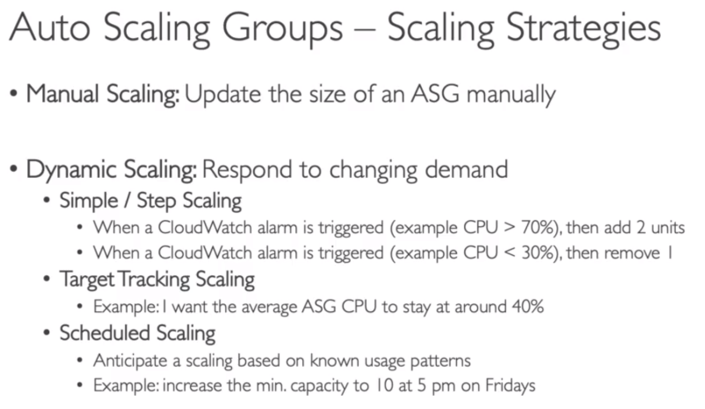
- Stands for Relational Database Service. It's a managed DB service
- It allows you to create DBs in the cloud that are managed by AWS
- You can't SSH into an RDS instance
- Support the following RDBMS: Postgres, Mysql, Mariadb, oracle or sql server
- Support storage auto scaling: helps you increase your DB storage dynamically. You hace to set maximum storage threshold (maximum limit for DB storage). Automatically modify storage if: free storage is less than 10% of allocate storage, low-storage lasts at least 5 minutes and 6 hours have passed since last modification
- Read replicas: it's main porpuse is scale the read capacity of your database (not availability). The replicas update is asynchronous (eventual consistency). You can have up to 5 read replicas. In AWS there is a cost when data goes from one AZ to another, for RDS within the same region you don't pay this fee. Read replicas add new endpoints with their own DNS name. We need to change our application to reference them individually to balance the read load. You can't create encrypted read replicas for an uncreypted database
- Multi AZ (disaster recovery): it's main porpuse is increase availability (not used for scaling) creating a failover DB that is always up to date (data replication is synchronous). The key part is the DNS name for the DB that allows the use of the failover in case of failure. You can change from a Single-AZ to a Multi-AZ configuration with zero downtime, internally AWS create the failover DB from a snapshot of the original DB and set up the syncronization between them. Also a read replica can be set up as Multi AZ for disaster recovery
- Advantages of using RDS over configure a DB on an EC2 instance by yourself:
- Automated provisioning (OS patching
- Continuous backups and restore to specific timestamp (Point in time restore)
- Monitoring dashboard
- Read replicas for improved read performance
- Multi AZ setup for DR (disaster recovery)
- Maintenance windows for upgrades
- Scaling capability
- Storage backed by EBS (gp2 or io1)
- RDS Backups: you can manually create a DB snapshot and the retention of this backup is as long as you want. When activate automated backup you have daily full backup of the database (during the maintenance window), transaction logs are backed-up by RDS every 5 minutes, ability to restore to any point in time (from oldest backup to 5 minutes ago) and 1 to 35 days of retention (set to 0 to disable automated backups).
Trick: In a stopped RDS database, you will still pay for storage. If you plan on stopping it for a long time, you should snapshot and restore instead.
Aurora
- It's a propietary technology of AWS optimized for the cloud (performance improvement - 5x over MySQL and 3x over PostgreSQL).
- Only supports MySQL and PostgreSQL. It doesn't support MariaDB.
- Is 20% more expensive than RDS but also more efficient.
- Its storage grows automatically in increments of 10GB up to 12 8TB.
- Can have up to 15 replicas and the replication process is faster (sub 10ms).
- Have one Writer Endpoint that internally points to the master node (the only one that can write) and one Reader Endpoint that load balance the client's connections to the read replicas.
- The master (writer) node is replaced with any read replica on failure.
- Read replica auto scaling: based on CPU usage
- Custom endpoints: allows you to control which read replica responds to each custom endpoint you create.
- Aurora serverless: automatic instantiation and auto scaling based on actual usage. The client connect to "Proxy fleet" (managed by Aurora) and it scales the DB based on current usage.
- Aurora Multi-master: the default failover mechanism promotes a read replica as the new master. With multi-master every node does reads and writes which gives you the ability to inmediately failover from one node to another.
- Global Aurora: see image. It offers Aurora as a global (multi region) service. Typical cross-region replication takes less than one second.
- Aurora Machine Learning: simple, optimized, and secure integration between Aurora and AWS ML Services (Amazon SageMaker, Amazon Comprehend)
- To manually delete your Aurora cluster, you first need to delete all the read and write replicas.
- Aurora Backups: you can manually create a DB snapshot and the retention of this backup is as long as you want. When enable automated backups you can choose between 1 to 35 days of retention and once enabled it can't be disabled. The automated backups offers you point in time recovery based on the retention days you configure.
-Aurora Database Cloning: create a new aurora cluster form an existing one faster than snapshot and restore. Useful to create staging databases from a production one without impacting performance.
- RDS / Aurora Restore options: restoring a backup or a snapshot creates a new database. Restoring from an S3 bucket creates a new database.
- RDS / Aurora security:
- At rest encryption: is managed using AWS KMS (must defined at launch time). If the master is not encypted the read replicas cannot be encrypted. To encrypt an unencrypted database go through a DB snapshot and restore as encrypted
- In-flight encryption: TLS-ready by default, use the AWS TLS root certificates client-side
- IAM Authentication: you can use IAM roles to connect to your database (instead of username / password). Not supported by Oracle databases.
- Security groups: use it to control network access to your RDS / Aurora database
- No SSH available: the only exception is RDS Custom
- Audit logs: can be enabled and sent to CloudWatch Logs for longer retention
RDS Proxy
- Fully managed database proxy for RDS. Serverless, autoscaling, highly available (multi-AZ)
- Support RDS (MySQL, Postgres, MariaDB) and Aurora (MySQL, Postgres)
- No code changes required for most apps
- Allows app to pool an share connections established with the database
- Improve database efficiency by reducing the stress on database resources (CPU, RAM) and minimize open connections (timeouts)
- Reduced RDS and Aurora failover time by up to 66%
- Enforce IAM authentication for database and securely store credentials in AWS Secrets Manager
- It's never plublicly accesible. Must be accessed from VPC
ElastiCache
- Fully managed service for Redis and MemCached
- AWS takes care of OS maintenance / patching, optimizations, setup, configuration, monitorign, failure recovery and backups
- Usign ElastiCache involves heavy application code changes
- Do not support IAM authentication. IAM policies in ElastiCache are only used for AWS API-level security
- You can set an token / password when you create a Redis cluster. This is an extra level of security for your cache (on top of security groups)
- Redis support SSL in-flight encryption
- MemCached support SASL-based authenticaiton
- Patterns for ElastiCache:
- Lazy loading: all the read data is cached, data can become stale in cache. Only when you don't have an entry in the cache the request pass to the actual database
- Write through: adds or update data in the cache when written to a DB (no stale data)
- Session store: store temporary session data in cache (using TTL features)
Important ports:
- FTP: 21
- SSH: 22
- SFTP: 22 (same as SSH)
- HTTP: 80
- HTTPS: 443
- PostgreSQL: 5432
- MySQL: 3306
- Oracle RDS: 1521
- MSSQL Server: 1433
- MariaDB: 3306 (same as MySQL)
- Aurora: 5432 (if PostgreSQL compatible) or 3306 (if MySQL compatible)
RDS Multi AZ

Aurora Features 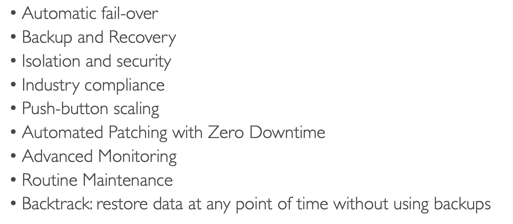
Global Aurora 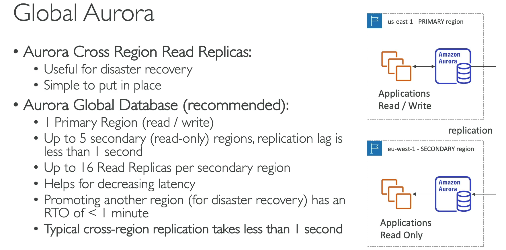
Aurora Machine Learning 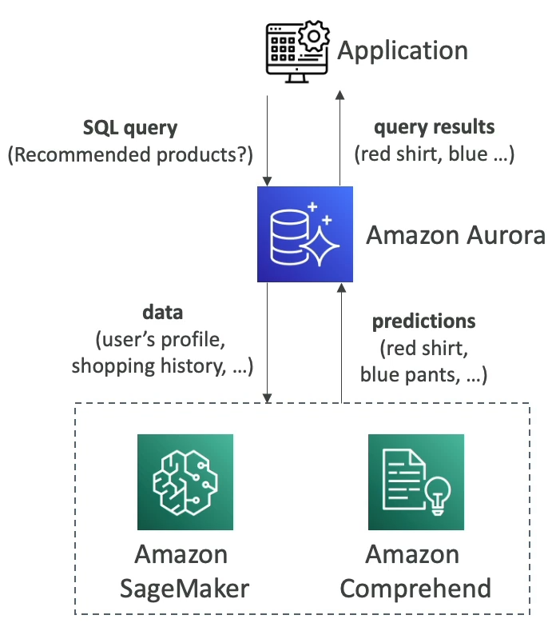
Redis vs MemCached 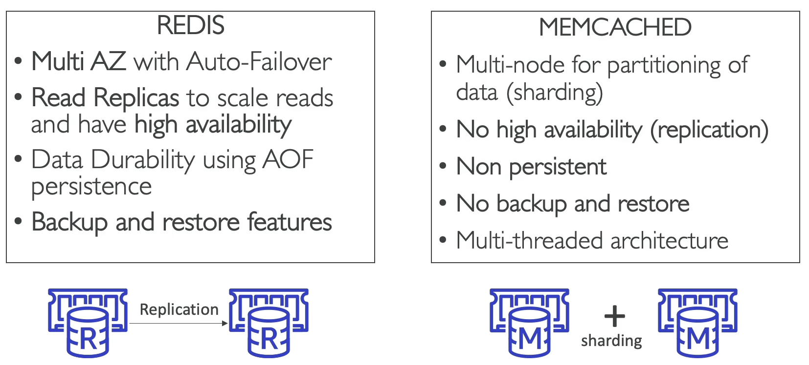
- DNS: Domain Name System which translates the human friendly hostnames into the machine IP addresses. When you make a request with a human friendly hostname the DNS searches for the corresponding IP in a recursive way, from the root (right-most part of the url) to the domain name (left-most part of the url).
- Domain Registrars (and 3rd party domains): an organization that allows you to purchase and register domain names (Amazon, NameCheap, GoDaddy, etc.). The AWS registrar is called Amazon Registrar Inc. You can use Route53 just as a DNS service with a 3rd party domain or register your domain with AWS. In order to setup a 3rd party domain with Route53 you need to create a hosted zone an then change the DNS nameservers (NS records) in the domain registrar for the nameservers of the hosted zone in order to be able to manage the DNS record from the AWS console.
Time To Live - TTL: represents the time that an entry is going to be cached in the client to avoid request the DNS too often. If you set a high TTL the DNS (Route53) will receive less traffic but have the problem of outdated records whenever you need to change an IP address. If you set a low TTL your DNS is going to receive a lot of request which means a higher cost (Route53 charge you depending on the traffic). The TTL is mandatory for all types of records, except alias.
- Hosted Zones: a container for DNS records that define how to route traffic to a domain and its subdomains. It responds to DNS queries with the corresponding IP address. When you register (purchase) a domain, it automatically generate a hosted zone with its correspondingNS record. The cost for each hosted zone is 0,50 dollars per month. There are two types of hosted zones:
- Public: for public domain names you can create a public hosted zone which contains records that specify how to route traffic on the internet
- Private: for private domain names you can create a private hosted zone which contains records that specify how to route traffic within one or more VPCs
- Domain/subdomain name: e.g. example.com
- Record type: e.g. A or AAAA
- Value: the IP address
- Routing Policy: how Route 53 reponds to queries
- TTL: amount of time the record cache at DNS resolvers
- A: maps a hostname to IPv4
- AAAA: maps a hostname to IPv6
- AAAA: maps a hostname to IPv6
- CNAME: maps a hostname to another hostname. The target must have an A or AAAA record. Only works fot NON root domains
- Alias: is a record specific for Route53. Points a hostname to an AWS Resource.It works for root domains and non root domains. It's free of charge and offers native health check. An alias record is always of type A or AAAA for AWS resources. You can't set the TTL for this type of record, it's set automatically by Route53. You cannot set an alias for an EC2 DNS alias. See image for a list of possible targets for this type of record
- NS: Name Server for the hosted zone. Control how traffc is routed for a domain. Its is the DNS names or IP adresses of the servers you want to responds to the received queries for your hosted zone
- An endpoint: about 15 health checkers will check the endpoint health, if more than 18% of health checkers report the endpoint is healthy, Route53 considers it "healthy", otherwise is "unhealthy". You can set the interval for the health checks and a threshold (default is 3) that represents the times that health check result needs to be unhealthy in order to be marked the endpoint as unhealthy. Support TCP, HTTP and HTTPS. You have the ability to choose shich locations you want Route53 to use.
- Other Route53 health checks (calculated health checks): combine the results of multiple health checks into a single health check. You can use choose options based on logical operator such as AND, OR and NOT. It can monitor up to 256 child health checks. You need to specify how many child health checks need to pass in order to mark the resource as healthy
- CloudWatch metric (e.g. Dynamo throttle): they are useful to ealth check private hosted zones because Route53 health checkers are outside the VPC and they can't access private endpoints. In order to monitor private resources, you can create a CloudWatch Metric and associate a CloudWatch Alarm, then create a health check that checks the alarm itself
It doesn't refer to actual routing, like the load balancer routing. It refers to the info that is returned for a received DNS query:
- Simple: route traffic to a simple resource. Can specify multiple values and the client pick one of them randomly. It can't be associated with health checks
- Weighted: control the percentage of the requests that go to each resource (weight don't need to sum up to 100%). DNS records must have the same name and type. Can be associated with health checks. When assign weight 0 to a record Route53 stop to send traffic to that resource but if all records have weight 0, then all record will be returned equally
- Latency Based: redirect to the resource that has the least latency. Latency is based on traffic between users and AWS regions, so you need to select the region against the latency is going to be measured. Can be associated with health checks. Has a failover capability
- Failover: it switch the Ip address to the failver resource based on the status of a Route53 health check that you need to create beforehand. To set up a failover you create two A or AAAAA records, one marked as Primary and the failover marked as Secondary, both records needs to have same record name.
- Geolocation: on configuration specify location by continent, country or US state and the DNS is going to route the traffic to the specified IP address based on where the user is actually located - match with the configured location (if there's overlapping more precise location is selected). You should create a record with location = default in case thre's no match on location. Can be associated with health checks
- Geoproximity (using Route53 traffic flow feature): similar to geolocation but you can assign a "bias" to each record. The bias add more weight to the record when routing traffic so you can control the amount of traffic that is going to be routed to the specified resource based on user location and bias. The bias can be set from -99 (negative values) to 99. See images.
- Multi-value answer: used when routing traffic to multiple resources. Route53 return multiple values/rsources. Can be associated with health checks (return only values marked as healthy). up to 8 healthy values can be returned for eahc multi-value query. This is not a substitute for a load balancer because the idea is that the client can load balance (default behaviour when a client receive multiple values for a single record), not your backend
Route53 Hosted Zones 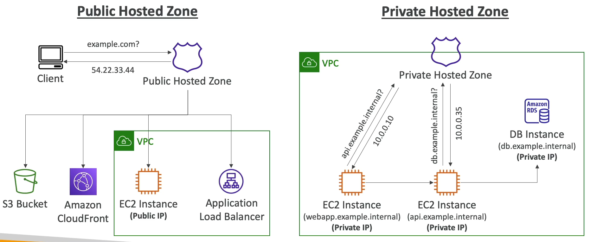
Alias record targets 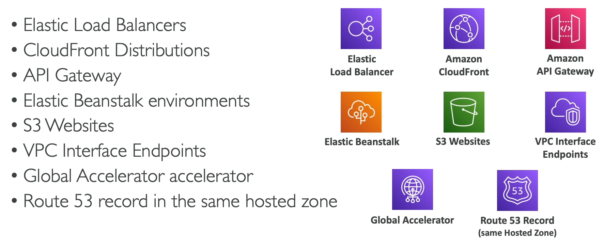
Geoproximity routing policy - to a user that has the same (or similar) geoproximity to both resources (DNS records) the bias helps you redirect traffic to the region with higher bias 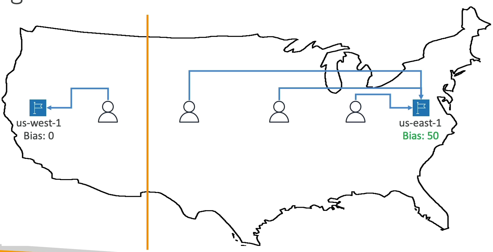
- Starts with a t2.micro EC2 instance wiht an elastic IP in case case that we need to restart the EC2 instance and preserve the same public IP
- Then our app is getting more traffic
- We make our EC2 instance an m5.large (vertical scale). We need to terminate the instance an create a new one with the new type, therefore we experience a downtime while upgrading the instance
- Then the app become really popular and we decide to scale horizontally. Let's say 3 EC2 instances with their own elastic IP attached. Support the current traffic but it's hard to continue scaling
- We decided to change the elastic IP approach adding a domain for our app and routing the traffic with Route53 (A record with TTL of 1 hour
- We have the problem that when one of our instances is not available the clients still try to get to the instance beacause of the TTl of 1 hour.
- To solve the issue we decide to group all the instances in a single AZ with a security group (private) that is only accesible by a load balancer + health checks thta we also add for this purpose
- Then we found out that add and remove instances manually is really hard. To deal with this, we decide to add an auto-scaling group
- We fear that our app will be down due to a disaster. Therefore, we decide to move our instances to different AZs with a multi-AZ load balancer
- After some time running the app in production, we notice that most of the time we can operate with just 2 EC2 instances up. This lead us to change the type of two instances to reserved instance for cost savings
- MyClothes.com (stateful app) It's basically a shopping cart where users have their details. The goal is to scale the app keeping it as stateless as possible
- The architecture of the app includes several EC2 instances with an auto-scaling group fronted by a load balancer
- The users have the problem that their data is lost on each request beacause the state is managed by instance and the load balancer route the request to different EC2 instances
- The first proposed solution for this issue was to use sticky sessions (session affinity) on the load balancer. This approach solve th issue until an EC2 instance is terminated
- In order to address this last problem, we decide to go one step further and manage all the cart info with cookies, so the client always has the info available a sends it to our backend on each request. This way our app is stateless but as the cart grows the requests become heavier
- We need a way to take off the load of the cart data on the client side and therefore manage this info in the backend. We decide to establish server sessions with cookies and leveraging a cache (ElastiCache) where we keep up to date the cart data for each user. See Image
- The last solutions works great so we decide to change the storage to something more robust like an RDS
- Then the traffic to our apps increase a lot, because of that we set a couple of read replicas
- We also consider a "write through" approach with a cache (hit the cache at first, if the cache has an entry it returns the info but if not the query goes to the RDS and update the info in the cache) but it has the downside of maintaining the cache which is always hard
- Afterward, we decide that we need to be ready for a disaster in our current AZ, and that's why we setup a multi-AZ load balancer
- Our last concern was the security. We decided to improve the cnfigurations of our security group so they can only allow connections from one party. EC2 instances only allows traffic from the load balancer and the ElastiCache and RDS instances only allow traffic from/to the EC2 instances
- MyWordPress.com The conclusion for this case is that EBS volumes are great for a single instanc but they don't scale very wel. For distributed application (our EC2 instances behind a load balancer) is a better option an EFS with an ENI configured in each EC2 instance to point to our EFS storage
- Instantiating Applications Quickly: this can be achieved with a combination of a Golden AMI and EC2 User Data (the script that runs on intance bootstrap). When it comes to databases and EBS volumes, the best approach is to restore from a snapshot.
- Golden AMI: is an AMI that you standardize through configuration, consistent security patching, and hardening. It also contains agents you approve for logging, security, performance monitoring, etc.
Elastic Beanstalk: it's a managed service that uses different resources (EC2, ASG, ELB, RDS, etc) to deploy an application handling automatically capacity provisioning, load balancing, scaling, application health monitoring, etc. With Elastic Beanstalk just the application code is the responsibility of the developer. Beanstalk is free, you only pay for the underlying resources it provision. Behind the scenes it leverages CLoudFormation to create a stack for your application
Beanstalk Components 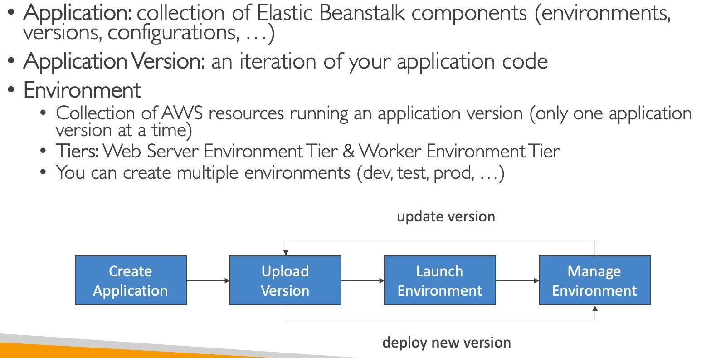
Beanstalk Webserver Tier vs Worker Tier 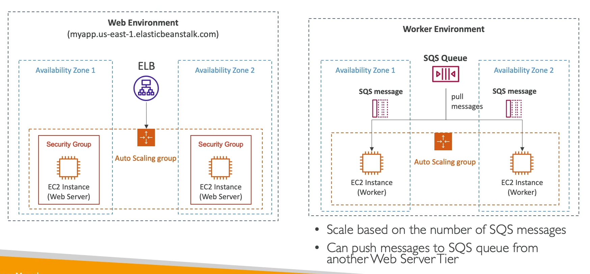
- Availability: measures how ready a service is for respond to requests. In S3 the availability varies depending on storage class
- The bucket's name must be globally unique. The naming convention comprehends: no uppercase, no undescore, 3-63 characters long and not an IP address.
- S3 is a globla service but the buckets are defined at the region level
- The buckets are private by default. You need you make it publicly accesible attaching it a policy (that can be created with the Policy Generator).
- The objects has some limits: max size of 5TB. Must be a "multi-part upload" if uploading more than 5GB
- Each object has metadata, a list of text key/vaue pairs with system or user metadata. The objects can also have up to 10 tags (that can be used to manage security or lifecycle) and a verdion id (if versioning is enabled).
- S3 versioning: allows you to maintain a history of the files stored in S3, so you can rollback any unintended change. Any file that is not versioned prior to enabling versionnig will have version "null".
- S3 cross / same region replication (CRR/SRR): must give proper IAM permissions and enable versioning in order to use this S3 feature (the version IDs are replicated). It basically replicates the data from one S3 bucket into another bucket that can even be in a different account. Copying is asynchronous. It's worth mentioning that files that already exist in the bucket before enabling the replication aren't going to be copied to the new bucket. To replicate existing objects you can use S3 Batch Replication (the console gives you the option when enabling replication). The replication feature has no "chaining" of replication; it means that if bucket 1 is replicated into bucket 2, which has replication into bucket 3, then object created in bucket 1 are not replicated in bucket 3. If you want to restore an versioned object you can do so deleting the "delete marker" version, by defualt the delete markers are not replicated but you can enable the delete markers to be replicated (this doesn't apply to a permanent delete of an object)
- Amazon S3 security options:
- IAM policies (user-based): which API calls should be allowed for a specific user from IAM
- Bucket Policies: bucket wide rules. Allow cross-account rules. Explicit DENY in an IAM Policy will take precedence over an S3 bucket policy.
- Object Access Control List (ACL): finer grain control (can be disabled)
- Bucket Access Control List (ACL): less common (can be disabled)
- Encryption: encrypt the objects using encryption keys
- General porpuse: used for frequently accesed data (offers low latency and high throughput). Can sustain two concurrent facility failures (99,99% availability)
-
Infrequent Access: used for data that is less frequentlly accesed but requires rapid access when needed. There two types of IA
storage:
- Standard-IA: 99,9% availability. Good for disaster recovery and backups.
- One Zone-IA: 99,5% availability. Stored in only one AZ so the data is lost when the AZ is destroyed (earthquake, etc) -
- Glacier: low-cost object storage meant for archiving/backup. Pricing is calculated for storage + object retrieval cost. Within this
storage class AWS offers three tiers:
- Instant Retrieval: milisecond retrieval, great for data accesed once a quarter. Minimum storage duration is 90 days
- Flexible Retrieval: this tier offers three retrieval types. Expedited (1 to 5 minutes), Standard (3 to 5 hours) and Bulk(5 to 12 hours). Minimum storage duration is 90 days
- Deep Archive: his tier offers two retrieval types. Standar(12 hours), and Bulk (48 hours - the retrieval of these objects is free). Minimum storage duration is 180 days - Inteligent Tiering: has an small monthly monitoring and auto-tiering fee. Moves objects automatically between access tiers based on usage. See image for default config.
S3 Inteligent Tiering 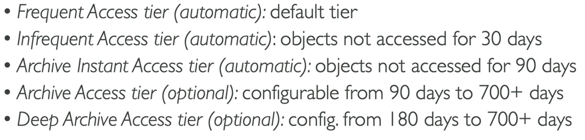
S3 Storage Classes Comparison 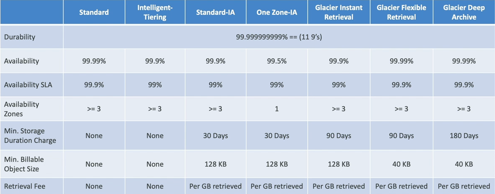
- The way of read a policy statement is the following: The "principal" is Allow/Deny ("effect") to perform the specified "action" on the specified "resource"
- You can create a policy with the help of the AWS Policy Generator. https://awspolicygen.s3.amazonaws.com/policygen.html
- You can attach an existing policy or create a new one.
- When it comes to Roles and Users, you can attach inline policies unless is a better solution to declare the policy globally an then attach it to the entity (Role or User).
- AWS Policy Simulator: you can test and troubleshoot identity-based policies, IAM permissions boundaries, Organizations service control policies (SCPs), and resource-based policies
- EC2 instance metadata: it's possible to make an API request from, and only from, an EC2 instance to know their metadata. It can be done requesting the url http://169.254.169.254/latest/meta-data. It works as if you are navigating a folders structure, the results you receive from the request can have a forward slash at the end, meaning that have more info inside it (kindof a folder). You can retrieve the IAM Role name from the metadata, but you cannot retrieve the IAM Policy
AWS SDK:
- We have to use an SDK when coding against AWS Services such as DynamoDB
- Fun fact... The AWS CLI uses the Python SDK (Boto3)
- If you don't specify or configure a default region when using an SDK, then us-east-1 will be chosen by default
Is a set of rules that define actions that Amazon S3 applies to a group of objects, so that they are stored cost effectively throughout their lifecycle. A good first step to put together or improve lifecycle rules is the S3 analytics, it helps you decide when transition objects to the right storage class, the report is update daily (24 to 48 hours to start seeing data analysis) with recommendations for Standard and Standard-IA (does NOT work for One Zone-IA or Glacier). There are two types of action for lifecycle rules:
- Transition actions: these actions define when objects transition to another storage class. For example, you might choose to transition objects to the S3 Standard-IA storage class 30 days after creating them, or archive objects to the S3 Glacier Flexible Retrieval storage class one year after creating them.
- Expiration actions: these actions define when objects expire. Amazon S3 deletes expired objects on your behalf.
S3 Requester Pays
In genral, bucket owners pay for all Amazon S3 storage and data transfer cost associated with their bucket. With requester pays buckets, the requester instead of the owner pays the cost of the request and the data download from the bucket. Helpful when you want to share large datasets with other accounts. The requester must be authenticated in AWS (cannot be anonymous)
S3 Event Notification
You can use the Amazon S3 Event Notifications feature to receive notifications when certain events happen in your S3 bucket (e.g. S3:ObjectCreated). This feature allows name (or path) filtering. You canc reate as many notifications as desired. The notification is tipically delivered within seconds but can sometimes take a minute or longer. The destination for the notifications can be SNS, SQS o Lambda. There is another destination option which is EventBridge.
S3 Performance (see images)
S3 Select and Glacier Select
Amazon S3 Select le permite utilizar instrucciones de lenguaje de consulta estructurada (SQL) simples para filtrar el contenido de los objetos de Amazon S3 y recuperar exactamente el subconjunto de datos que necesita (up to 400% faster and 80% cheaper). Si utiliza Amazon S3 Select para filtrar estos datos, puede reducir la cantidad de datos que Amazon S3 transfiere, lo que reduce también los costos y la latencia para recuperarlos.
Amazon S3 Select funciona con objetos almacenados en formato CSV, JSON o Apache Parquet. También funciona con objetos comprimidos con GZIP o BZIP2 (solo para objetos CSV y JSON), así como con objetos cifrados del lado del servidor. Puede especificar el formato de los resultados como CSV o JSON, y también puede determinar cómo se delimitan los registros en los resultados.
Amazon S3 Inventory
It's one of the tools Amazon S3 provides to help manage your storage. You can use it to audit and report on the replication and encryption status of your objects for business, compliance, and regulatory needs. Amazon S3 Inventory does not use the List API to audit your objects and does not affect the request rate of your bucket. Amazon S3 Inventory provides comma-separated values (CSV), Apache optimized row columnar (ORC) or Apache Parquet output files that list your objects and their corresponding metadata on a daily or weekly basis for an S3 bucket or a shared prefix (that is, objects that have names that begin with a common string). You can configure multiple inventory lists for a bucket and what metadata to include in each one
S3 Batch Operations
Perform bulk operations on existing S3 objects with a single request. You can do any kind of operation (modify object metadata or properties, encrypt/unencrypt objects, invoke lambda functions to perform custom actions on each object, etc) on a list of objects. A job consist of a list of objects, the action to perform, and optional parameters. S3 batch operations manages retries, tracks progress, sends completion notifications, geenrate reports, etc. You can use S3 Inventory to get object list and use S3 Select to filter your objects
S3 Lifecycle Rules - Example 2 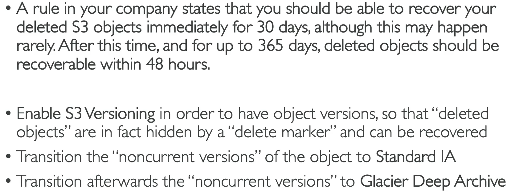
S3 Baseline Performance 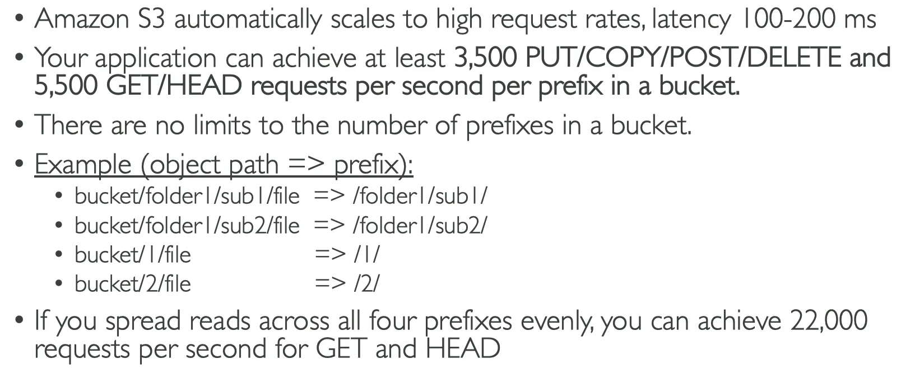
S3 Performance Optimizations 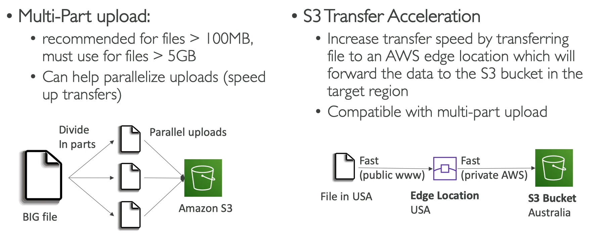
S3 byte-range fetches 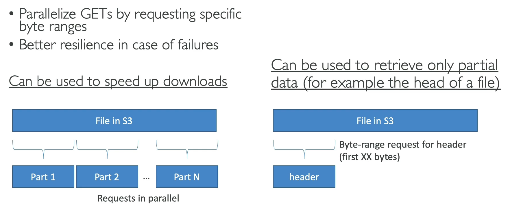
Encryption in transit (SSL/TLS): S3 exposes two methods, HTTP (unencrypted) and HTTPS (encryption in flight). Of course HTTPS is recommended. One way to force encryption is to use a bucket policy and refuse ay API call to PUT an S3 object without ecnryption. Another way to force encryption is to use the default encryption optio in S3. Bucket policies are evaluated before default encryption, so if you set both your request is going to be denied because the default encryption will never be reached
You can encrypt objects in S3 buckets using one of 4 methods:
- SSE-S3: encryption using keys handled, managed, and owned by AWS. Object is encrypted server-side. Encryption type is AES-256. Must set header "x-amz-server-side-encryption":"AES256" to request S3 to encrypt the object with AES256 mechanism
- SSE-KMS: encryption keys handled and managed by AWS KMS (Key Managemet Service). Two of the main KMS advantages are user control and the ability to audit key usage using CloudTrail. You have full control over the rotation policy of the encryption key. Object is encrypted server side. Must set header "x-amz-server-side-encryption":"aws:kms" to request S3 to encrypt the object with KMS mechanism. Using KMS you may be impacted by the KMS limits. When you upload (call GenerateDataKey KMS API) or download (call Decrypt KMS key) an object, the requests to KMS count toward the KSM quota per second (5.500, 10.000 or 30.000 req/s based on region) which can throws an throttle exception
- SSE-C: encryption using keys fully managed by the customer outside of AWS. AWS does NOT store the encryption key you provide. HTTPS must be used because the encryption key must be sent in HTTP headers for every request. HTTPS is mandatory for SSE-C
- Client Side Encryption: use client libraries such as Amazon S3 Client-Side Encryption Library. Clients must encrypt data themselves before sending to S3 and decrypt data themselves when retrieve data from S3. The customer fully manages the keys and encryption cycle
MFA Delete:
The multi factor authentication forces user to generate a code on a device before doing important operations. MFA will be required to permanently delete an object version or suspend versionig on the bucket, but it won't be required to less critical actions like enable versioning or list deleted versions. To use MFA Delete, versioning must be enabled on the bucket. In the AWS console the enabled/diabled indicator for MFA Delte is in the Bucket versioning section. Only the bucket owner (root account) can enable/disable MFA Delete. Currently, the MFA Delete for S3 can only be enabled via AWS CLI.
S3 Access Logs (Server Access Logging):
For audit porpuses, you may want to log all access to your S3 bucket. Any request made to S3, from any account, authorized or denied, will be logged into another S3 bucket. The data can be analyzed using data analysis tolls such as Amazon Athena, The target logging bucket must be in the same AWS region. The logging bucket must be a different bucket, if you set the same bucket as loggin bucket you create an infinite loop
S3 Presigned url:
A presigned url can be generated using the S3 Console, AWS CLI or SDK. Users given a pre-signed url inherit the permissions of the user that generated the URL for GET / PUT. The url expiration varies denpending on where you create it: S3 Console (1 minute up to 720 minutes - 12 hours), and for AWS CLI or an SDK (1 minute up to 604.800 seconds - 168 hours - default 3600 seconds)
S3 Glacier Vault:
Adopt a WORM model (Write Once Read Many). To activate it you need to create a Vault Lock Policy and then lock the policy itself (can no longer be changed or deleted). Helpful for compliance and data retention
S3 Object Lock:
Versioning must be enabled. Adopt a WORM model (Write Once Read Many) but this time you don't need to lock a policy. It block a single object version deletion for a specified amount of time. You need to set a retention period that specify the amoun of time that you protect an object (it can be extended). There are two retention modes:
- Compliance: object versions can't be overwritten or deleted by any user, including the root user. Object retentions mode can't be changed and retention periods can't be shortened
- Governance: most users can't overwrite or delete an object version or alter its lock settings. Some users have special permissions (given through IAM) to change the retention or deleete the object
- Legal Hold: protect the object indefenitely, regardless of the retention mode you choose (independent from the retention mode). Can be freely placed and removed using the s3:PuObjectLegalHold IAM permission
S3 Access Point (see image): it'a layer that you configure on top of your S3 bucket to manage access to the specified prefixes
S3 Object Lambda:
Use AWS Lambda Functions to change the object before it is rettrieved by the caller application. Only one S3 bucket is needed, on top of which we create S3 Access Point and S3 Object lambda Access Point
S3 Access Point
S3 Object Lambda 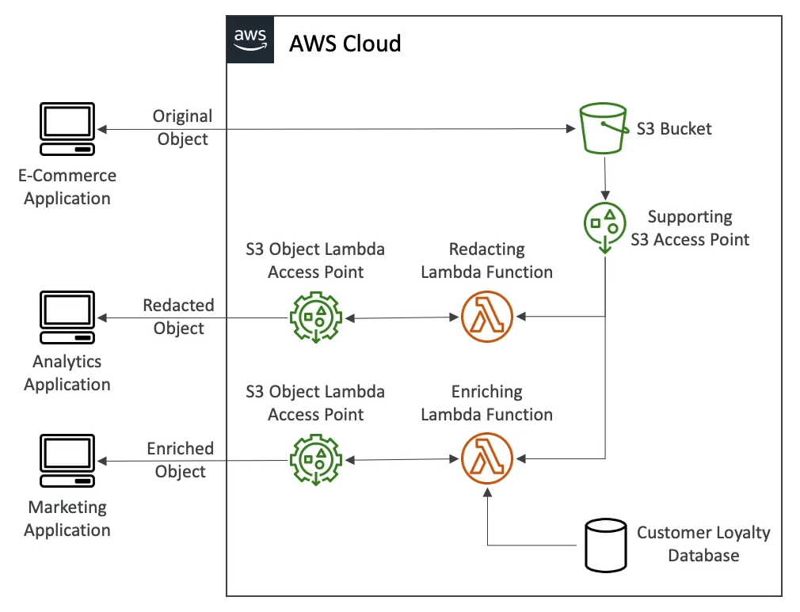
- It's a Content Delivery Network (CDN)
- Improves read performance, content is cached at the edge. Improves users experience.
- The CDN is made of 216 points of presence (edges locations) globally
- Offers DDoS protection leveraging AWS Shield and AWS Application Firewall
- You can use CloudFront in front of:
-
S3 Bucket
- For distributing files and caching them at the edge
- Enhanced security with CloudFront Origin Access Control (OAC). OAC is replacing Origin Access Identity (OAI)
- CloundFront can be used as an ingress (to upload files to S3)
-
Custom Endpoint (HTTP)
- Application Load Balance
- EC2 Instance
- S3 Website
- Any HTTP backend you want
- ALB as an origin: with this pattern the EC2 instances can be private because the ALB has connectivity to a private VPC but the ALB must be public and allow the CloudFront IPs in its security group
- CloudFront Geo Restriction: you can restrict who can access your distribution by creating a list of countries to allows o deny access. The list can be an allowlist (whitelist) or a blocklist (blacklist). The country of the client is determined using a 3rd party Geo-IP database
- CloudFront Prices Classes: the cost of data outs per edge zone can vary. You can reduce the number of edge location of your distribution for cost reduction and this can be done with price classes:
- Price Class All: all regions - best performance
- Price Class 200: most regions, but excludes the most expensive regions
- Price Class 100: only the least expensive regions
AWS Global Accelerator
- Unicast IP: one server holds one IP address.
- Anycast IP: all the servers hold the same IP address and the client is routed to the nearest one.
- AWS Global Accelerator uses anycast IP. It leverage the AWS global network (via edge locations) to route your application.
- When you enable AWS Global Accelerator, 2 Anycat IPs are created for your application. Anycast IP will send the traffic to directly to the closest edge location of your users, then the edge locations sends the traffic to your application.
- It allow "client affinity" that is a kind of sticky session
- Offers support for health checks
- Support 4 enpoint types: Application Load Balancer, Network Load Balancer, EC2 instance and Elastic IP address.
- You can assign a weight for each endpoint (a number from 0 to 255)
CloudFront vs S3 Cross Region Replication 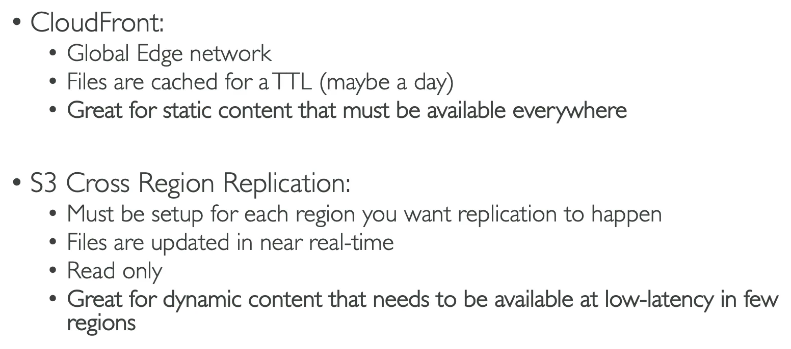
CloudFront Price Classes 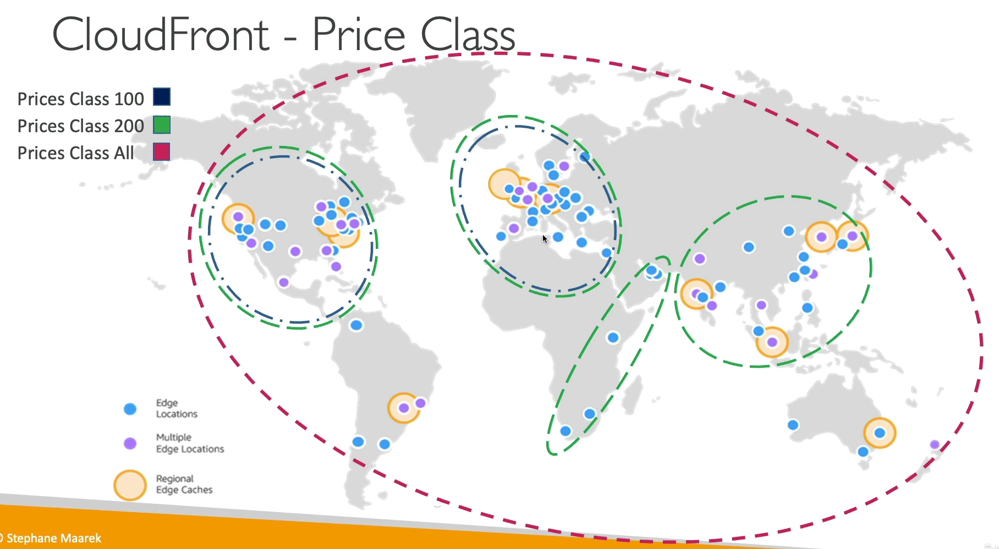
AWS Global Accelerator Pros 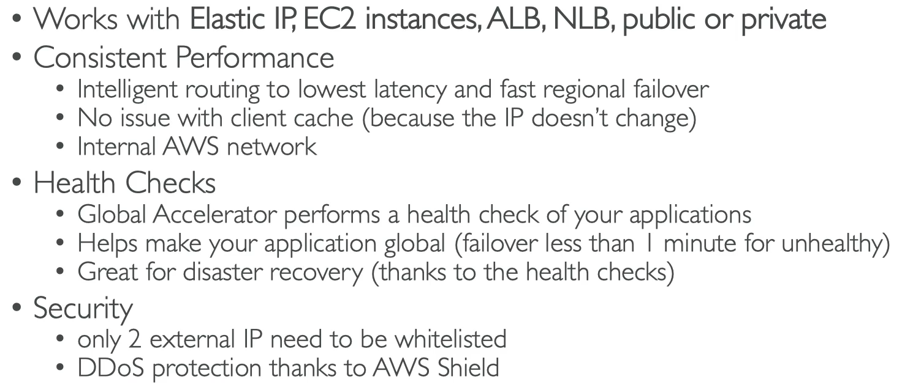
CloudFront vs AWS Global Accelerator 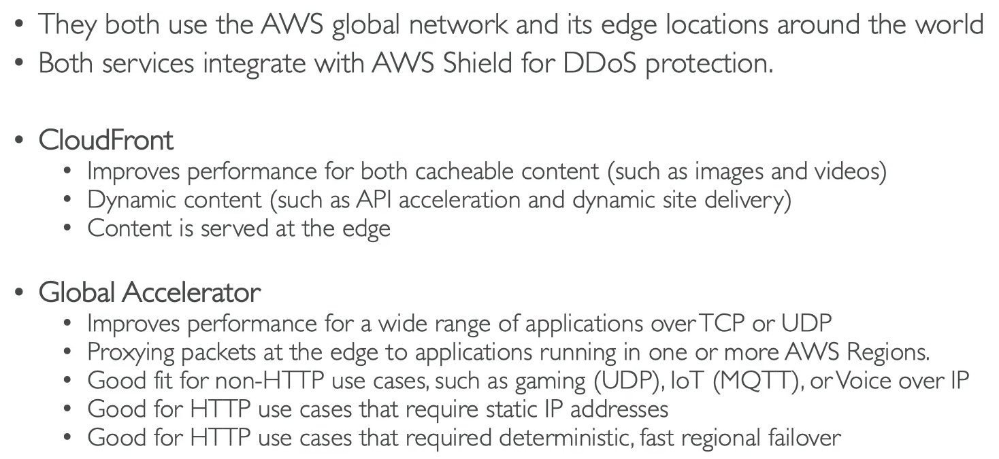
- The rule of thumb for this services is: if it takes more than a week to transfer over the network, use SnowB Devices (Offline devices to perform data migrations)
- Highly-secure, portable devices to collect and process data at the edge, and migrate data into and out of AWS
- The client request the device. AWS deliver the device to the client's facility and then he shipped back the device
- All the Snow devices can run EC2 instances and AWS Lambdas functions (using AWS IoT Greengrass). Useful for edge computing
- Offer long-term deployment options. 1 or 3 years discounted pricing
- To apply for a Snow Family device you must create a "job" (could be to import to S3, export from S3 or for local compute and storage). You need to add your shipping preferences, choose the type of device you need, security preferences (create service roles, enable encryption, etc) and notification preferences (sns topic to receive emails about the status of your job)
- Snow devices cannot import directly into S3 Glacier. You must use an S3 first, in combination with an S3 lifecyvle policy
- AWS OpsHub: historically to use Snow Family devices you needed a CLI. For these cases you can use AWS OpsHub (a software to install on your computer/laptop) to manage your Snow Family devices. It helps you with: unlocking and configuring single or clustered devices, transfering files, launching and managing instances running on Snow Family devices, monitor device metrics (storage capacity, active instances on your device), launch compatible AWS services on your devices (ex: EC2 instances, AWS DataSync, Network File System - NFS, etc)
- The following are the types of devices that AWS Snow Family offers:
- SnowCone: 2CPUs, 4GB of memory (RAM), wired or wireless access, USB-C power using cord or the optional battery. recommended for use cases that needs up to 24 TB (online or offline). Smaller than SnowBall Edge (just 4.5 pounds or 2.1Kg). Small, portable computing, anywhere, rugged and secure, withstands harsh environments. Device used for edge computing, storage, and data transfer. 8TB of usable storage. Must provide your own battery and cables. Can be sent back to AWS offline, or connect it to internet and use AWS DataSync (pre-installed) to send data.
-
SnowBall Edge: physical data transfer solution. Mover Tbs or PBs of data in or out of AWS. It's an alternative to moving data
over the network. You pay per data transfer job. Provide block storage and Amazon S3-compatible object storage. With this device you
can possibly process the data while it's in transit. It comes in two flavours:
- SnowBall Edge Storage Optimized: up to 40 vCPUs, 80 GiB of RAM, 80TB of HDD capacity for block volume and S3 compatible object storage
- SnowBall Edge Compute Optimized: 52 vCPUs, 208 GiB of RAM, 42TB of HDD capacity for block volume and S3 compatible object storage
- SnowBall Edge Compute Optimized With GPU: useful for video processing or machine learning
- SnowMobile: better option if you are trying to transfer more than 10PB. It's an actual truck used to transfer exabytes of data (1EB = 1.000PB = 1.000.000TB). Each SnowMobile (truck) has 100PB of capacity and you can use several of them in parallel. Offer high security, temperature controlled, GPS monitoring, 24/7 video surveillance
Amazon FSx
- It's a fully managed services for launch 3rd party high performance file systems on AWS.
- You can choose the throughput per unit of storage, encryption, logging options, and backup and maintenance options when creating an FSx resource
- FSx deployment options:
- Scratch File System: temporary storage where data is not replicated (doesn't persist if file server fails. It support high burst (6x faster, 200MBps per TiB)
- Persistent File System: long term storage. Data is replicated within same AZ. Replace failed files within minutes
-
FSx for Windows (File Server):
- It's a fully managed windows file system share drive
- Support SMB protocol and windows NFTS
- Support integration with Microsoft Active Directory (useful to manage ACLs and user quotas)
- Can be mounted on linux EC2 instances
- Supports Microsoft's Distributed File System (DFS) Namespaces (group files across multiple FS)
- Scale up to tens of GB/s, millions of IOPS and hundreds of PBs of data
- Can be accessed from on-premises infrastructure (VPN or Direct Connect)
- Can be configured to be multi-AZ (high availability)
- Data is backed up daily to S3
- Storage options:- SSD: latency sensitive workloads (databases, media processing, data analytics, etc)
- HDD: broad spectrum of workloads (home directory, CSM, etc)
-
FSx for Lustre:
. Lustre is a type of distributed POSIX compliant file system, for large scale computing
- The name Lustre is derived from linux and cluster
- Good for machine learning and High Permoformance Computing (HPC)
- Sclaes up to hundreds of GB/s, millions of IOPS and sub-ms latency
- Can be accessed from on-premises infrastructure (VPN or Direct Connect)
- Seamless integration with S3. Can read S3 as a file system (through FSx). Can write the output of the computations back to S3 (through FSx)
- Storage options:- SSD: low latency. Good for OPS intensive workloads (small and random file operations)
- HDD: throughput intensive workloads (large and secuential file operations)
-
FSx for NetApp ONTAP:
- It's managed NetApp ONTAP on AWS
- NetApp is a provider for specialized storage solutions. They offer solutions for different sectors, including the cloud.
- ONTAP is NetApp's internal operating system, specially optimized for storage functions at both high and low levels
- File System compatible with NFS, SMB, and iSCSI protocols
- Move workload running on ONTAP or NAS (Network-Attached Storage) to AWS
- Works with: Linux, Windows, MacOS, VMware Cloud on AWS, Amazon Workspaces & AppStream 2.0, Amazon EC2, ECS and EKS
- Storage shrinks or grows automatically
- Support snapshots, replication, compression and data-deduplication at a low cost
- Offers point-in-time instantaneous cloning (helpful for testing new workloads) -
FSx for OpenZFS:
- Managed OpenZFS sile system on AWS
- OpenZFS is a CDDL licensed open-source storage platform that encompasses the functionality of traditional filesystems and volume manager
- File system compatible with NFS protocol (v3, v4, v4.1, v4.2)
- Used to move workloads running on ZFS to AWS
- Works with: Linux, Windows, MacOS, VMware Cloud on AWS, Amazon Workspaces & AppStream 2.0, Amazon EC2, ECS and EKS
- Scales up to one million IOPS with less than 0.5ms latency
- Support snapshots, compression at low cost
- Offers point-in-time instantaneous cloning (helpful for testing new workloads)
Storage Gateway
- Useful for hybrid clouds. Your infrastructure has a part on the cloud and other on-premises
- The storage cloud native options are: block storage (EBS, EC2 instance store), file storage (EFS, FSx) and object storage (S3 and Glacier)
- Storage Gateway is a bridge between on-premises data an cloud data
- Use cases: disaster recovery, backup and restore, tiered storage (ex: more frequently used data on-promise and less frequently used data on the cloud)
- Hardware Appliance: using Storage Gateway means you need on-premises virtualization. Otherwise, you can use Storage Gateway Hardware Appliance (you can buy it on amazon.com). Works with File Gateway, Volume Gateway and Tape Gateway. Has the required CPU, memory, network and SSD cache resources to function correctly. Helpful for daily NFS backups in small data centers
- Types of Storage Gateway:
-
S3 File Gateway:
- Uused to expose S3 objects to your on-premises
- It uses NFS or SMB protocol (basically translates these protocols to S3)
- SMB protocol has integration with Active Directory (AD) fro user authentication
- Most recently data is cached in the S3 File Gateway
- Supports S3 Standard, S3 Standard IA, S3 One Zone and S3 Inteligent Tiering
- Need to create IAM roles for each S3 File Gateway to allow access to the target S3 bucket
- Allows transition to S3 Glacier using a lifecycle policy -
FSx File Gateway:
- Native access to Amazon FSx for Windows File Server
- You are able to connect to AWS FSx from your on-premises but the FSx File Gateway offers you local cache for frequently accessed data
- Windows native compatibility (SMB, NTFS, Active Directory, etc)
- Useful for group file shares and home directories -
Volume Gateway:
- Block storage using iSCSI protocol backed by S3
- Your storage is backed up by EBS snapshots which can help on-premises volumes
- There are two types of Volume Gateway:- Cached volumes: low latency access to most recent data
- Stored volumes: entire dataset is on premise with scheduled backups to S3
-
Tape Gateway:
- Tape Gateway is used to backup data using existing tape-based processes (and iSCSI interface)
- Some companies have backup processes using physical tapes. With Tape Gateway, companies use the same processes but in the cloud.
- A virtual tape library (VTL) is a data storage virtualization technology used typically for backup and recovery purposes. A VTL presents a storage component (usually hard disk storage) as tape libraries or tape drives for use with existing backup software
- Virtual tape library (VTL) backed by S3 and Glacier
- Works with leading backup software vendors
AWS Transfer Family
- Fully managed service for file transfers into and out of Amazon S3 or Amazon EFS usinf the FTP protocol
- Supported protocols: File Transfer Protocol (FTP), File Transfer Protocol over SSL (FTPS), Secure File Transfer Protocol (SFTP)
- You pay per provisioned endpoint per hour + data transfers (in and out) in GB
- You can store and manage users' credentials within the service or integrate with existing authentication systems (Microsoft Active Directory, LDPA, Okta, Amazon Cognito, or other custom system)
AWS DataSync
- Used to move large amounts of data to and from: on-premises or other clouds to AWS (using NFS, SMB, HDFS, S3 API, etc) - needs agent installation, AWS to AWS (different storage services) - no agent needed.
- Can synchronize to: Amazon S3 (any storage classes, including Glacier), Amazon EFS and Amazon FSx (any FSx type)
- Replication tasks can be scheduled hourly, daily or weekly
- File permissions and metadata are preserved on destiny
- One agent task can use 10Gbps. You can setup a bandwidth limit.
FSx Deployment Options - Scratch (top) and Persistent (bottom) 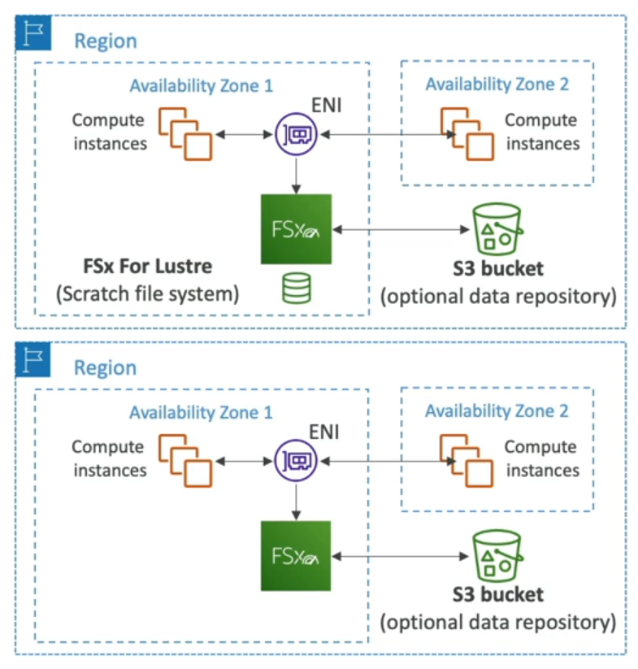
Storage Gateway - Volume Gateway 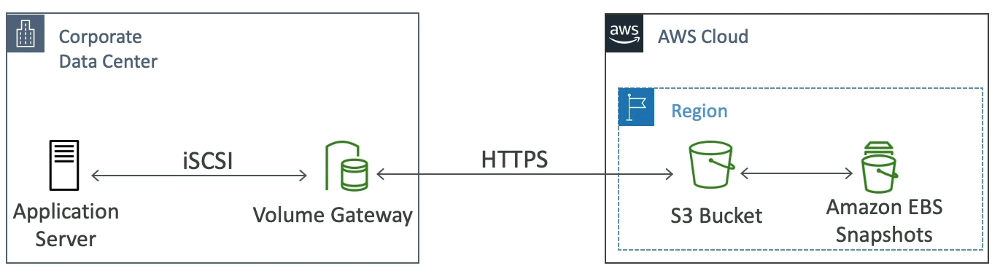
Storage Gateway - Tape Gateway 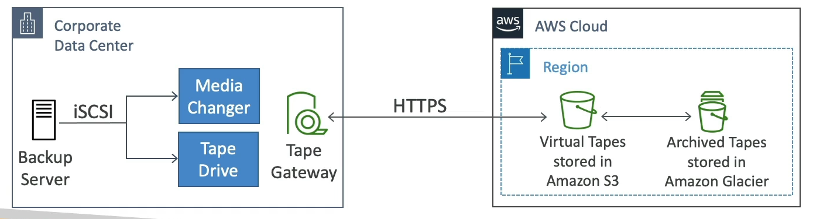
Storage Gateway use cases 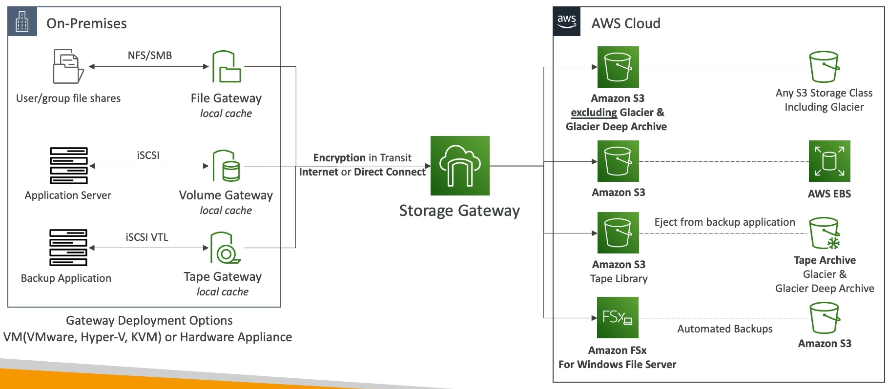
Transfer Family
DataSync from on-premises to AWS